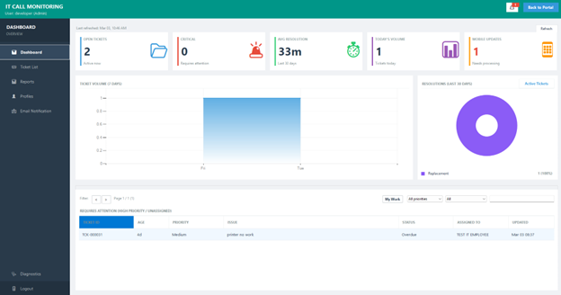

What is IT Call Monitoring?
IT Call Monitoring (ITCM) is the built-in helpdesk/ticketing module in YIMS. It records IT calls, assigns tickets, tracks status and idle time, and provides history for auditing and reporting.

Tickets
Create and manage tickets from Pending to Solved.
Assignments
Assign tickets to IT employees for ownership and tracking.
Escalation
Highlight and escalate idle tickets so nothing is missed.
Notify stakeholders on new tickets, updates, reminders, and escalations.
Tip: If a technician shows “(no account)” in the app, create a linked user
account in Account Management so they can be assigned and tracked properly.